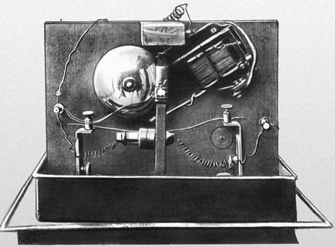

История беспроволочного телеграфа
Web-Quest
Радиотелеграф А. С. Попова
Радиотелеграф А. С. Попова
Между батареей и первичной обмоткой катушки Румкорфа был включен телеграфный ключ Морзе. При замыкании этого ключа постоянный ток батареи шел через витки обмотки. Прерыватель с большой частотой замыкал и размыкал цепь, в результате чего постоянный ток преобразовывался в переменный. Благодаря электромагнитной индукции во вторичной обмотке катушки Румкорфа наводился переменный ток высокого напряжения. Эта обмотка замыкалась на разрядник. Таким образом, каждое замыкание телеграфного ключа порождало потоки искр в разряднике. Короткими или более продолжительными замыканиями производились короткие и долгие потоки искр, которые соответствовали точкам и тире азбуки Морзе. Один полюс разрядника был заземлен, а другой соединен с антенной, которая излучала порожденные разрядником электромагнитные волны в окружающее пространство.
А. С. Попов первый предложил использовать для связи электромагнитные волны. Придав сигналам
определенную длительность (длинные или более короткие), можно с помощью азбуки Морзе передавать
депеши на большие расстояния без проводов. Попов создает более чувствительный когерер с железными
опилками и платиновыми электродами. Он изобрел автоматический способ встряхивания когерера,
использовав молоточек электрического звонка. Для включения цепи звонка он применил электромагнитное
реле. Присоединив к когереру вертикальный провод, А. С. Попов изобрел приемную антенну, благодаря
чему значительно увеличилась дальность действия приемника.Устройство первого радиоприемника состояло
из батареи, электромагнитного реле, когерера и электрического звонка. Передатчиком был искровой
разрядник, передавший электромагнитные колебания на антенну. Под действием принятых антенной радиоволн
сцеплялись металлические опилки и когерер начинал пропускать ток от батареи. Срабатывало реле и
включался звонок, ослабевало сцепление между опилками и туда поступал следующий сигнал.
Некоторая часть этих волн попадала в антенну приемника и индуцировала в ней слабый переменный ток. Причем длительность каждого принимаемого импульса тока точно соответствовала продолжительности сигнала разрядника. Устройство приемника было почти таким же, что в предыдущей модели: когерер соединялся с батареей и электромагнитом, реле которого при помощи местной батареи приводило в действие пишущий аппарат Морзе, включенный в цепь вместо звонка. Пока когерер не подвергался действию электромагнитных волн, его сопротивление было настолько велико, что ток в цепи когерера не протекал. Когда же на когерер оказывали действие электромагнитные волны, его сопротивление сильно уменьшалось, и сила тока в цепи возрастала настолько, что электромагнит притягивал свой якорь, включая цепь телеграфного аппарата. Это притяжение не прекращалось, пока электромагнитные волны действовали на когерер.

Одновременно с замыканием цепи приходил в действие молоточек, который ударял по когереру.
Сопротивление последнего увеличивалось. Однако если волны продолжали действовать,
то сопротивление тотчас опять уменьшалось и состояние малого сопротивления продолжалось
несмотря на сотрясения. Все это время телеграфный аппарат чертил линию на ленте. И только
когда воздействие электромагнитных волн прекращалось, проявлялось действие сотрясения, и
сопротивление увеличивалось до прежней величины - аппарат выключался до появления новой волны.
Таким образом на телеграфной ленте вычерчивались точки и тире, соответствующие сигналам
пересылаемой депеши.
Много сил и времени затратил ученый на совершенствование своего радиоприемника. После того, как он соединил телеграфный аппарат Морзе со своей схемой и ввел запись на ленту, появился первый в мире радиотелеграф — приемник и передатчик сигналов по азбуке Морзе с записью. 24 марта 1896 года Попов демонстрировал свою аппаратуру на заседании Российского физико-химического общества и произвел передачу сигналов на расстояние 250 м. Первая в мире радиограмма состояла из двух слов "Генрих Герц".